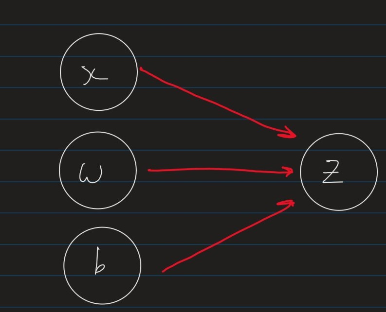
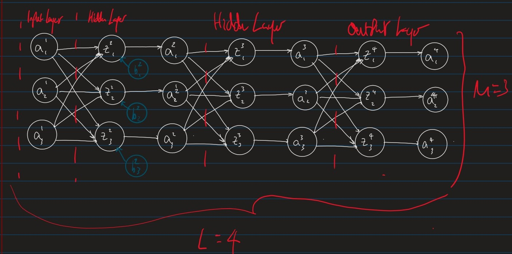
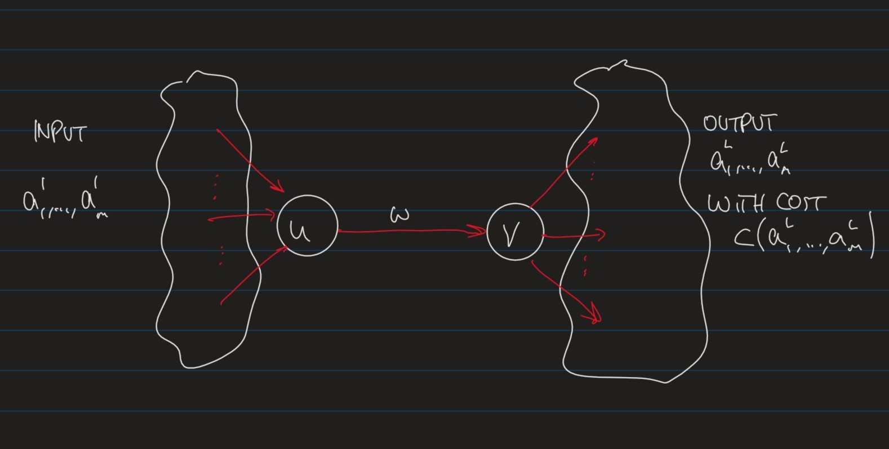
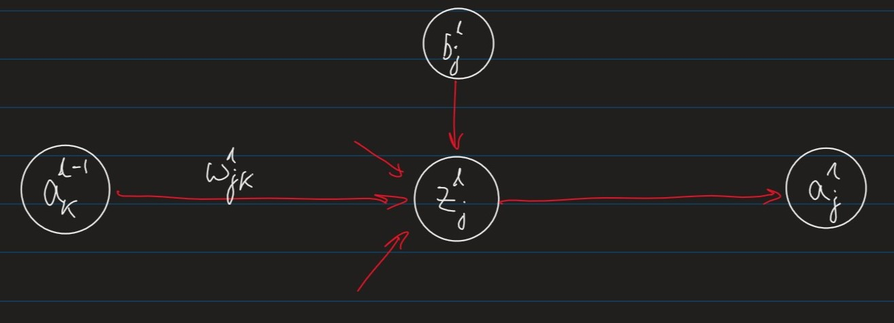
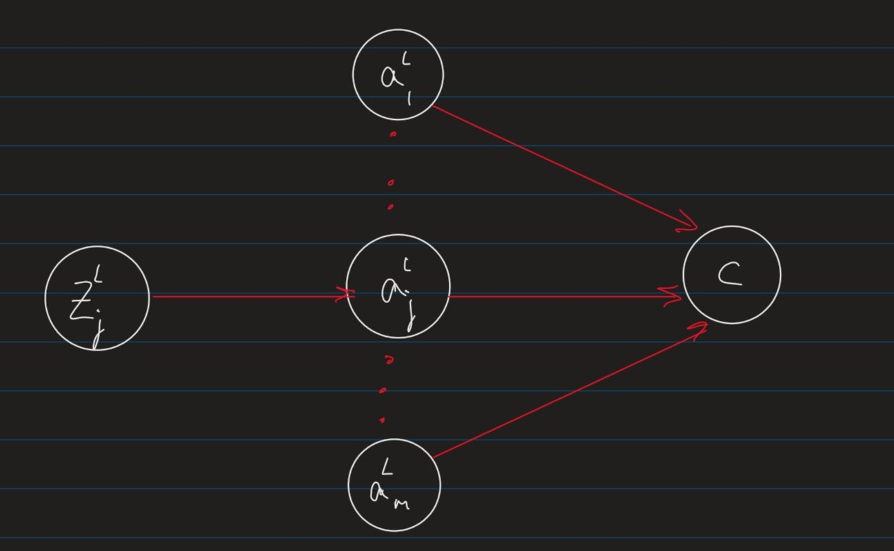
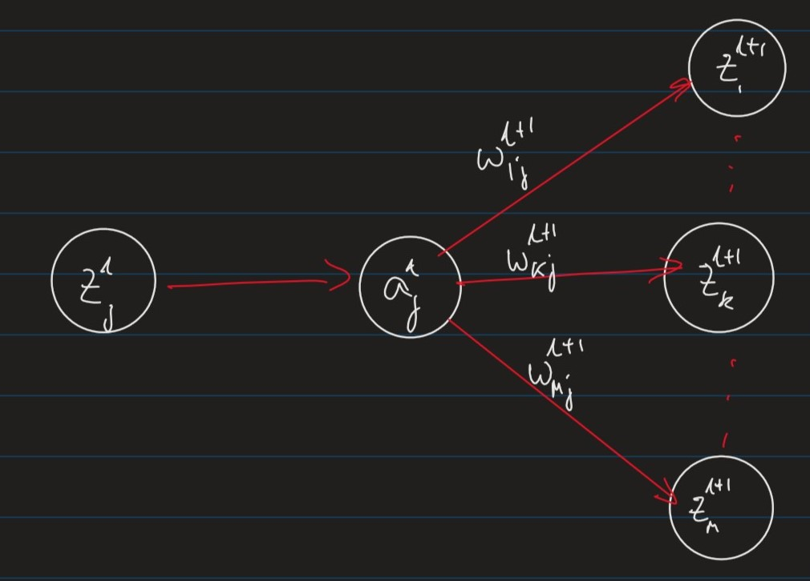

We will describe ML models using computation graphs where
Nodes represent variables (values, vectors, matrices)Edges represent functional dependencies
i.e. an edge from x x x y y y y y y x x x
The linear regression model, z = ∑ i = 1 m a i w i + b z = \sum_{i=1}^m a_iw_i+b z = ∑ i = 1 m a i w i + b

Stepping it up, here is a simple Feed-forward Neural Network:

Where:
L ← L \leftarrow L ←
layer 1 is the "input layer"
layer L L L "output layer"
m ← m\leftarrow m ← "width" of the network, which can change for each layerw j k l ← w_{jk}^l\leftarrow w j k l ← "weight" of the connection between the k t h k^{th} k t h l − 1 l-1 l − 1 j t h j^{th} j t h l l l b j l ← b_j^l\leftarrow b j l ← "bias" of the j t h j^{th} j t h l l l
Note: These appear for every z z z
z j l = ∑ k w j k l a k l − 1 + b j l ← z_j^l = \sum_k w_{jk}^l a_k^{l-1} + b_j^l \leftarrow z j l = ∑ k w j k l a k l − 1 + b j l ← j j j l l l a j l = ϕ ( z j l ) ← a_j^l = \phi(z_j^l)\leftarrow a j l = ϕ ( z j l ) ← "activation" of unit j j j l l l ϕ \phi ϕ "activation function" .
The parameters of the network are:
The weights w j k l w_{jk}^l w j k l
The Biases b j l b_j^l b j l

To apply gradient descent to optimise a weight w w w b b b
δ C δ w = δ C δ v ⋅ δ v δ w \frac{\delta C}{\delta w} = \frac{\delta C}{\delta v}\cdot\frac{\delta v}{\delta w} δ w δ C = δ v δ C ⋅ δ w δ v

z j l = ∑ k = 1 m w j k l a k l − 1 + b j l z_j^l = \sum_{k=1}^m w_{jk}^l a_k^{l-1}+ b_j^l z j l = k = 1 ∑ m w j k l a k l − 1 + b j l
a j l = ϕ ( z j l ) a_j^l = \phi(z_j^l) a j l = ϕ ( z j l )
δ C δ w j k l = δ C δ z j l ⋅ δ z j l δ w j k l = δ C δ z j l ⋅ a k l − 1 \frac{\delta C}{\delta w_{jk}^l} = \frac{\delta C}{\delta z_j^l}\cdot\frac{\delta z_j^l}{\delta w_{jk}^l} = \frac{\delta C}{\delta z_j^l}\cdot a_k^{l-1} δ w j k l δ C = δ z j l δ C ⋅ δ w j k l δ z j l = δ z j l δ C ⋅ a k l − 1
Where a k l − 1 a_k^{l-1} a k l − 1 "activation" of unit k k k l − 1 l-1 l − 1
δ C δ b j l = δ C δ z j l ⋅ δ z j l δ b j l = δ C δ z j l ⋅ 1 \frac{\delta C}{\delta b_j^l} = \frac{\delta C}{\delta z_j^l}\cdot \frac{\delta z_j^l}{\delta b_j^l} = \frac{\delta C}{\delta z_j^l}\cdot 1 δ b j l δ C = δ z j l δ C ⋅ δ b j l δ z j l = δ z j l δ C ⋅ 1
Hence, we can compute δ C δ w k j \frac{\delta C}{\delta w_{kj}} δ w k j δ C δ C δ b j l \frac{\delta C}{\delta b_j^l} δ b j l δ C
δ j l : = δ C δ z j l \delta_j^l := \frac{\delta C}{\delta z_j^l} δ j l : = δ z j l δ C
The vector δ l \delta^l δ l local gradient for layer l l l

a j L = ϕ ( z j L ) a_j^L = \phi(z_j^L) a j L = ϕ ( z j L )
The local gradient for the output layer is:
δ j L = δ C δ z j L \delta_j^L = \frac{\delta C}{\delta z_j^L} δ j L = δ z j L δ C By definition
= δ C δ a j L ⋅ δ a j L δ z j L = \frac{\delta C}{\delta a_j^L}\cdot\frac{\delta a_j^L}{\delta z_j^L} = δ a j L δ C ⋅ δ z j L δ a j L
= δ C δ a j L ⋅ ϕ ′ ( z j L ) = \frac{\delta C }{\delta a_j^L} \cdot \phi'(z_j^L) = δ a j L δ C ⋅ ϕ ′ ( z j L ) a j L = ϕ ( z j L ) a_j^L = \phi(z_j^L) a j L = ϕ ( z j L )
The partial derivative δ C δ a j L \frac{\delta C}{\delta a_j^L} δ a j L δ C m m m
C ( a 1 L , ⋯ , a m L ) : = 1 2 ∑ k = 1 m ( y k − a k L ) 2 C(a_1^L,\cdots,a_m^L) := \frac{1}{2}\sum_{k=1}^m (y_k - a_k^L)^2 C ( a 1 L , ⋯ , a m L ) : = 2 1 k = 1 ∑ m ( y k − a k L ) 2
y k y_k y k k t h k^{th} k t h
a k L a_k^L a k L k t h k_{th} k t h
i.e. this is essentially mean squared error
in which case,
δ C δ a j L = a j L − y j \frac{\delta C}{\delta a_j^L}= a_j^L - y_j δ a j L δ C = a j L − y j

z k l + 1 = ∑ r w k r l + 1 a r l z_k^{l+1} = \sum_r w_{kr}^{l+1} a_r^l z k l + 1 = r ∑ w k r l + 1 a r l
a j l = ϕ ( z j l ) a_j^l = \phi(z_j^l) a j l = ϕ ( z j l )
δ j l = δ C δ z j l \delta_j^l = \frac{\delta C}{\delta z_j^l} δ j l = δ z j l δ C definition of local gradient δ j l \delta_j^l δ j l = δ C δ a j l ⋅ δ a j l δ z j l = \frac{\delta C}{\delta a_j^l}\cdot \frac{\delta a_j^l}{\delta z_j^l} = δ a j l δ C ⋅ δ z j l δ a j l = ( ∑ k δ C δ z k l + 1 ⋅ δ z k l + 1 δ a j l ) ⋅ ϕ ′ ( z j l ) = \left(\sum_k \frac{\delta C}{\delta z_k^{l+1}} \cdot \frac{\delta z_k^{l+1}}{\delta a_j^l}\right)\cdot \phi'(z_j^l) = ( k ∑ δ z k l + 1 δ C ⋅ δ a j l δ z k l + 1 ) ⋅ ϕ ′ ( z j l ) δ C δ a j l \frac{\delta C}{\delta a_j^l} δ a j l δ C
= ϕ ′ ( z j l ) ∑ k δ k l + 1 ⋅ w k j l + 1 = \phi'(z_j^l)\sum_k \delta_k^{l+1}\cdot w_{kj}^{l+1} = ϕ ′ ( z j l ) k ∑ δ k l + 1 ⋅ w k j l + 1 definition of local gradient δ k l + 1 \delta_k^{l+1} δ k l + 1
∀ \forall ∀ w w w b b b
δ C δ w j k l = δ j l ⋅ a k l − 1 \frac{\delta C}{\delta w_{jk}^l} = \delta_j^l\cdot a_k^{l-1} δ w j k l δ C = δ j l ⋅ a k l − 1
δ C δ b j l = δ j l \frac{\delta C}{\delta b_j^l} = \delta_j^l δ b j l δ C = δ j l
Where the local gradient δ j l \delta_j^l δ j l
δ j l = { ϕ ′ ( z j L ) ⋅ δ C δ a j L if l = L (output layer) ϕ ′ ( z j l ) ⋅ ∑ k δ k l + 1 ⋅ w k j l + 1 otherwise (hidden layer) \delta_j^l =
\begin{cases}
\phi'(z_j^L)\cdot \frac{\delta C}{\delta a_j^L} &\text{if $l=L$ (output layer)} \\\\
\phi'(z_j^l)\cdot\sum_k \delta_k^{l+1}\cdot w_{kj}^{l+1} &\text{otherwise (hidden layer)}
\end{cases} δ j l = ⎩ ⎪ ⎪ ⎨ ⎪ ⎪ ⎧ ϕ ′ ( z j L ) ⋅ δ a j L δ C ϕ ′ ( z j l ) ⋅ ∑ k δ k l + 1 ⋅ w k j l + 1 if l = L (output layer) otherwise (hidden layer)
The back-propagation algorithm can exploit efficient implementations of matrix operations
Note: recall that for a matrix A ∈ R m × R n \textbf{A} \in \R^m\times\R^n A ∈ R m × R n A i j A_ij A i j i t h i^{th} i t h j t h j^{th} j t h
For two matrices A ∈ R m × R n \textbf{A} \in \R^m\times\R^n A ∈ R m × R n B ∈ R n × R l \textbf{B} \in \R^n\times\R^l B ∈ R n × R l
Operation
Name
( A T ) i j = A j i (\textbf{A}^T)_{ij} = A_{ji} ( A T ) i j = A j i Matrix Transpose
( AB ) i j = ∑ k A i k B k j (\textbf{AB})_{ij} = \sum_k \textbf{A}_{ik}\textbf{B}_{kj} ( AB ) i j = ∑ k A i k B k j Matrix Multiplication
For two vectors u ⃗ , v ⃗ ∈ R m \vec{u},\vec{v} \in \R^m u , v ∈ R m
Operation
Name
u ⃗ + v ⃗ = ⟨ u 1 + v 1 , ⋯ , u m + v m ⟩ \vec{u}+\vec{v} = \langle u_1+v_1,\cdots,u_m+v_m\rangle u + v = ⟨ u 1 + v 1 , ⋯ , u m + v m ⟩ Vector addition
u ⃗ ⋅ v ⃗ = ∑ i = 1 m u i v i \vec{u}\cdot\vec{v} = \sum_{i=1}^m u_iv_i u ⋅ v = ∑ i = 1 m u i v i Dot Product
u ⃗ ⊙ u ⃗ = ⟨ u 1 v 1 , ⋯ , u m v m ⟩ \vec{u}\odot\vec{u} = \langle u_1v_1,\cdots,u_mv_m \rangle u ⊙ u = ⟨ u 1 v 1 , ⋯ , u m v m ⟩ Hadamard Product
( u ⃗ v ⃗ T ) i j = u i v j (\vec{u}\vec{v}^T)_{ij} = u_iv_j ( u v T ) i j = u i v j Outer Product